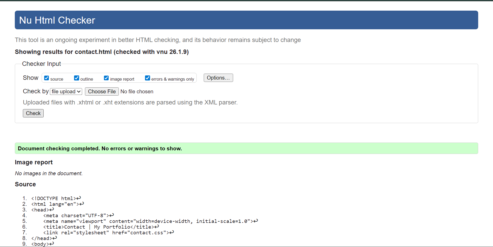
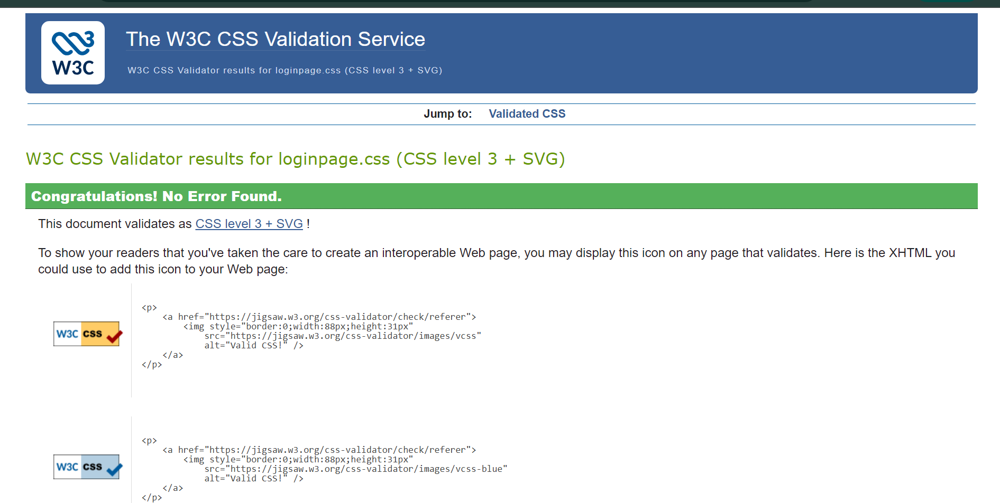

My Learning Experience
Creating this portfolio website has been a challenging but rewarding experience. At the beginning of the module, I had very little understanding of how websites were structured. Learning HTML was confusing at first, especially remembering which tags to use and how pages connect to each other. Over time, this became easier as I practiced building different pages and fixing mistakes.
CSS was one of the hardest parts for me. Small errors could break the entire layout, and debugging sometimes took a long time. However, these problems helped me learn how important it is to write clean code and test changes step by step. Seeing the design finally work as intended was very satisfying and motivated me to continue improving.
Development of the Website
At first, the website started as a simple single page with basic text. As the term progressed, I expanded it into a multi-page portfolio with consistent navigation. I learned how to link pages together, embed videos, create forms, and apply responsive design so the site works on both desktop and mobile devices.
Using semantic HTML elements such as <nav>,
<main>, and <section> helped improve the
structure and accessibility of the website. This also made the code easier to
read and understand.
Design Decisions
I chose a simple and clean design to keep the website easy to use and professional. Neutral colours and readable fonts were selected so users can focus on the content without distraction. The layout was influenced by modern portfolio websites that use clear navigation and minimal design.
Different CSS files were used for different pages to demonstrate flexibility in design. For example, the video demonstration page focuses on media content, while the site report page uses a more text-based layout for readability.
Validation and Video Demonstration
All HTML and CSS files were tested using online validation tools to ensure there were no errors. Screenshots of the validation results are included below as evidence of valid code.
 Video link: Watch Video